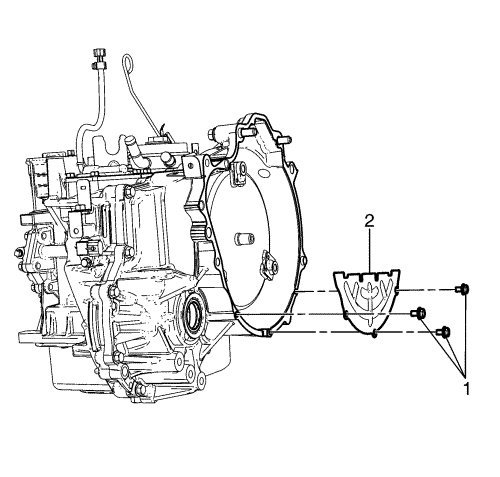
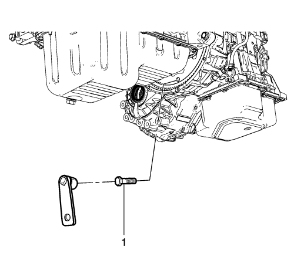
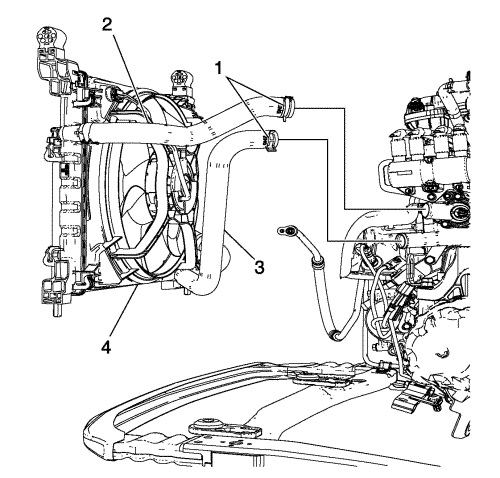
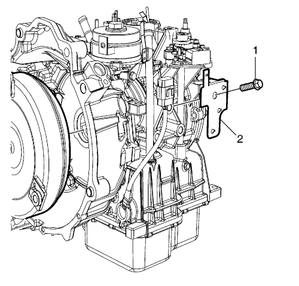
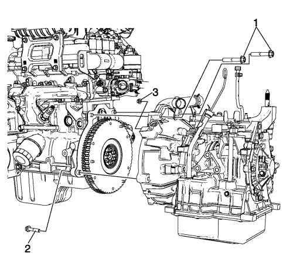

Sustitución de la caja de cambios
Herramientas especiales
DT-49070 Herramienta de desmontaje y montaje de pernos del convertidor
Si desea informarse sobre herramientas regionales equivalentes, consultar Herramientas especiales .
Procedimiento de desmontaje
- Elevar el vehículo y soportarlo de manera segura. Consultar Elevación del vehículo con un gato .
- Vacíe el aceite del cambio. Consultar Sustitución del aceite del cambio .

- Desmonte los pernos de la chapa de recubrimiento del convertidor de par (1).
- Desmonte la chapa de recubrimiento del convertidor de par (2).

- Desmonte los pernos del convertidor de par (1) usando la herramienta de desmontaje y montaje DT-49070.
- Separe el semieje de la rueda delantera del cubo de rueda. Consultar Sustitución del semieje de la rueda delantera .
- Tras retirar las piezas relacionadas para extraer el conjunto del tren motriz, desmonte el conjunto del tren motriz del vehículo. Consultar
Sustitución del motor : con dispositivo de elevación del motor y MT → con CH-49289 y CH-49290 → con EN-49802 y EN-50176 .
- Desconecte el compresor del aire acondicionado y el tubo flexible del condensador del condensador de aire acondicionado. Consultar Sustitución del tubo flexible del compresor y condensador de aire acondicionado .

- Desmonte la abrazadera del tubo flexible de entrada y salida del radiador (1).
- Desconecte los tubos de entrada y salida del radiador (2, 3) y desmonte el conjunto del condensador y el radiador (4).

- Desemborne el conector eléctrico del mazo de cables del cambio y los conectores eléctricos de la sonda Lambda.
- Desmonte el perno del soporte del conector del terminal (1) y el soporte (2).
- Desconecte el conector eléctrico del sensor de revoluciones de entrada.
- Desconecte el conector eléctrico del sensor de revoluciones de salida.
- Retire el sensor de posición del cigüeñal. Consultar Sustitución del sensor de posición del cigüeñal .

- Desmonte los pernos de soporte (1, 2) y los soportes (3, 4).
- Separe el mazo de cables de la caja de cambios.
- Desconecte los tubos flexibles del refrigerador del aceite del refrigerador del aceite del cambio. Consulte Sustitución del tubo flexible de salida del refrigerador de líquidos y Sustitución del tubo flexible de entrada del refrigerador de líquidos .
- Desmonte el soporte de montaje trasero de la caja de cambios. Consultar Sustitución del soporte de montaje del cambio - Parte trasera .
- Desmonte el semieje de la rueda delantera de la caja de cambios. Consultar Sustitución del semieje de la rueda delantera .
- Desmonte el motor de arranque. Consultar Sustitución del motor de arranque .

- Extraiga los tornillos superiores del cambio (1).
- Extraiga el tornillo inferior del cambio (2).
- Extraiga la tuerca del cambio (3).
- Separe la caja de cambios del motor.
Procedimiento de montaje
- Monte la caja de cambios en el motor.
Precaución: Consulte Precaución con las fijaciones en la sección Prólogo
- Monte la tuerca inferior del cambio de marcha (3) y apriétela hasta 61 N·m (44 lib. pie).
- Monte el tornillo del soporte del cambio de marcha (2) y apriételos hasta 61 N·m (44 lib. pie).
- Monte los tornillos superiores del soporte del cambio de marcha (1) y apriételos hasta 61 N·m (44 lib. pie).
- Instale el motor de arranque. Consultar Sustitución del motor de arranque .
- Monte el semieje de la rueda delantera a la caja de cambios. Consultar Sustitución del semieje de la rueda delantera .
- Monte el soporte de montaje trasero de la caja de cambios. Consultar Sustitución del soporte de montaje del cambio - Parte trasera .
- Conecte los tubos flexibles del refrigerador del aceite del refrigerador del aceite del cambio. Consulte Sustitución del tubo flexible de salida del refrigerador de líquidos y Sustitución del tubo flexible de entrada del refrigerador de líquidos .
- Coloque el mazo de cables a la caja de cambios.
- Monte el soporte lateral de la caja del cambio (3), el perno de soporte (1) y apriete a 13 N·m (115 lb in).
- Monte el soporte lateral de la carcasa del convertidos (4), el perno de soporte (2) y apriete a 44 N·m (33 lb pie).
- Instale el sensor de posición del cigüeñal. Consultar Sustitución del sensor de posición del cigüeñal .
- Conecte el conector eléctrico del sensor de revoluciones de salida.
- Conecte el conector eléctrico del sensor de revoluciones de entrada.
- Monte el soporte del conector del terminal (2), el perno del soporte del conector del terminal (1) y apriete a 44 N·m (33 lib. pie).
- Emborne el conector eléctrico del mazo de cables del cambio y los conectores eléctricos de la sonda Lambda.
- Monte el conjunto del condensador y el condensador (4) y conecte los tubos flexibles de entrada y salida del radiador (2, 3).
- Monte la abrazadera del tubo flexible de salida del radiador (1).
- Conecte el compresor del aire acondicionado y el tubo flexible del condensador al condensador de aire acondicionado. Consultar Sustitución del tubo flexible del compresor y condensador de aire acondicionado .
- Monte el conjunto del tren motriz en el vehículo y después monte las piezas relacionadas. Consultar
Sustitución del motor : con dispositivo de elevación del motor y MT → con CH-49289 y CH-49290 → con EN-49802 y EN-50176 .
- Monte el semieje de la rueda delantera en el cubo de rueda. Consultar Sustitución del semieje de la rueda delantera .
Nota: Asegúrese de que el nuevo perno del convertidor de par con sellante blanco se monta primero y después se montan los 2 nuevos pernos del convertidor de par con sellante naranja.
- Monte los NUEVOS pernos del convertidor de par (1) usando la herramienta de desmontaje y montaje DT-49070 y apriete a 45 N·m (33 lib. pie).
- Monte la chapa de recubrimiento del convertidor de par (2).
- Monte los pernos de la chapa de recubrimiento del convertidor de par (1) y apriételos a 10 N·m (89 lib. pie).
- Llene la caja de cambios con aceite. Consultar Sustitución del aceite del cambio .
| © Copyright Chevrolet. Reservados todos los derechos |